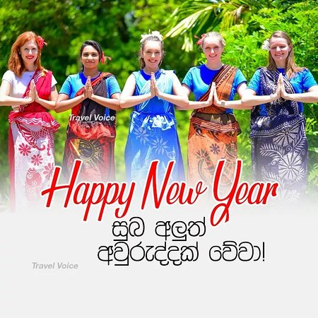
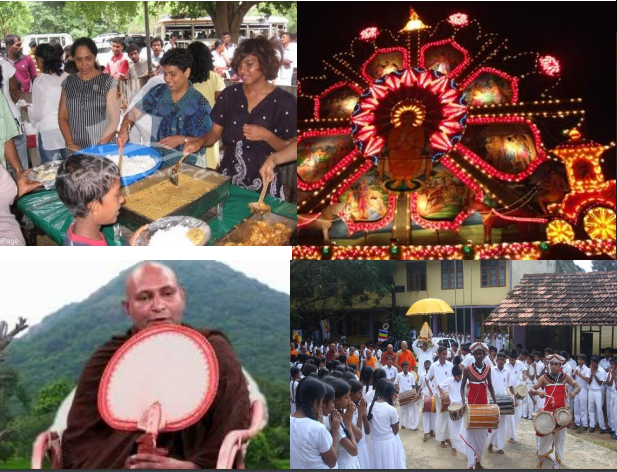
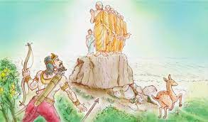
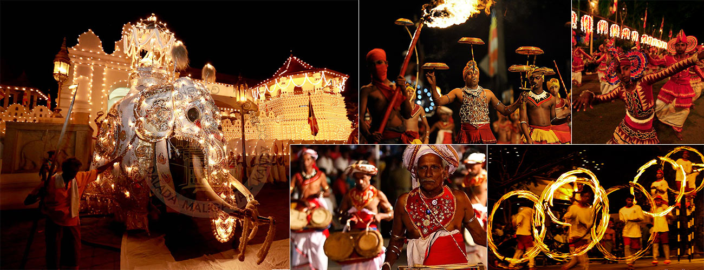
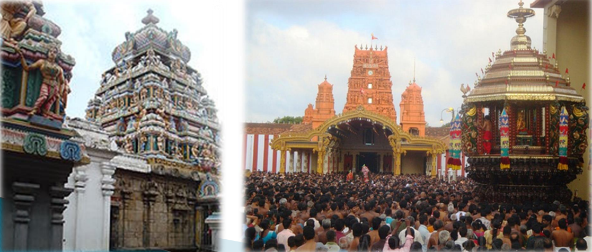
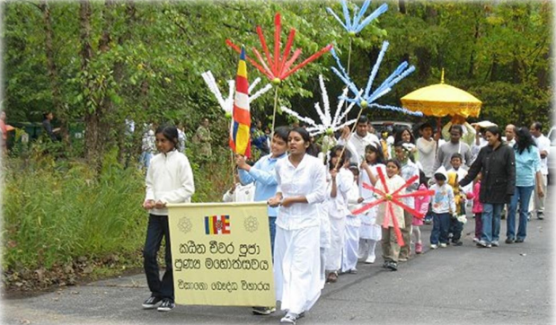
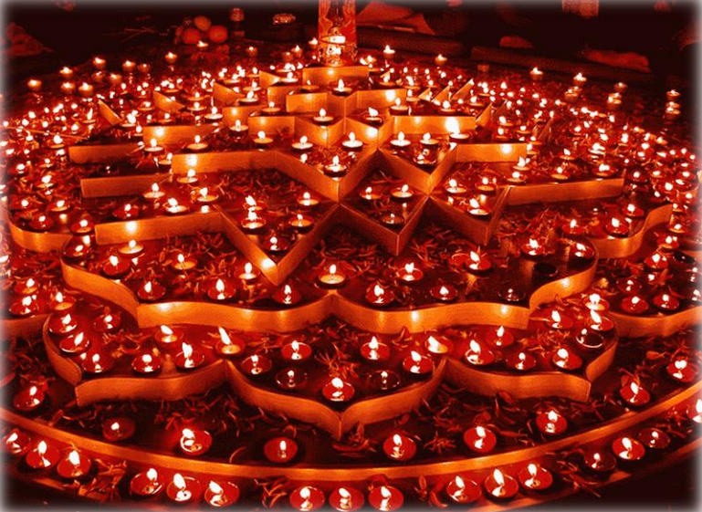

January
Duruthu Poya
1st visit of lord Buddha to Mahiyanganaya
after 9th month of enlightment
3rd visit to Kelaniya
Kelani Rajamaha Vihara perahera (Procession)
Culture attractions
Traditional dancers, drummers, Whip crackers,
enrobed elephants
Thai Pongal
Hundu Harvest Festival
Celebrate January 14 - Hindu homes and
temples
Special ritual
Traditional dancers, drummers, Whip crackers,
enrobed elephants
Madu Pongal
Domestic animals wash and feed
Auspicious red color smeared on their
forehead
Garlanded with marigolds
February
Nawam
Nawam Perahera- Gangarama Temple
Navam Perahera Festival in Colombo is a
famous parade that draws tourists and
visitors from across the country. You will find
elephants, dancers and musicians taking to
the streets during this grand and pompous
parade in Colombo in Sri Lanka through two
nights. (04th and 5th Feb).
Lord buddha’s decision to attain
Parinibbana. Depart from this world.
Maha shivarathree
Hundu Harvest Festival
Late February – Early March
Hindu festival
March
Medin (full moon Poya day in March)
Commemorates the visit of The Buddha to his home to preach to his father King Suddhodana and other relatives and show them the path to enlightenment and final deliverance.
April
Bak (full moon Poya day in April)
It commemorates the second visit of The
Buddha to Sri Lanka which took place in the
fifth year of his Supreme Enlightenment.
To dissolve Choolodara and Mahodara (Naga
tribe) conflict at Nagadeepa
Sinhala-Hindu new Year
May
Vesak (full moon Poya day in May)
The Buddhist calendar begins with the month of Vesak. On Vesak Day, Buddhists world over commemorate the triple anniversary of Sakyamuni Siddhartha Gautama The Buddha. Triple anniversary because The Buddha was born, attained Supreme Enlightenment at the age of thirty five, and after a successful ministry of forty five years attained Parinirvana or passed away on a Vesak (May) full moon Poya Day. It was also on a Vesak full moon Poya Day, in the eighth year of his enlightenment, that The Buddha made his third and final visit to Sri Lanka. On this full moon Poya begins the 2541 year of the Buddha.
June
Poson (full moon Poya day in June)
It commemorates the introduction of Buddhism to Sri Lanka by Arahat Maha Mahinda (son of King Asoka of India) at Mihintale in the third century B.C. Ven Mahinda established the Dispensation of The Buddha (Buddhasasana) in Sri Lanka.
July
Esala (full moon Poya day in July)
Commemorates the deliverance of the first sermon to the five ascetics and setting in motion the Wheel of the Dhamma (Dhammachakka) at Sarnath Benares, India. The essence of this sermon is the explanation of the Four Noble Truths: The Noble Truth of Suffering or dissatisfaction or conflicts (Dukkha), the cause of suffering, the cessation of suffering and the path leading to the cessation of suffering. And The Noble Eight-fold Path.
July, August
Kandy- Esala Perehera ( Temple of the Tooth)
Katharagama – Esala festivals
Dondra – Maha Vishnu festival
Bellanwila Rajamaha Vihara – Perahera festival
Ratnapura -Maha Saman Devala Perahera
Munneshwaram – Chilaw Vel festival
Nallur Festival – Jaffna
September
Binara (full moon Poya day in September)
Commemorates The Buddha's visit to heaven to preach to his mother and celestial multitude. Also the commencing of the Bhikkhuni (nun's) Order. Prajapathi Gothami approached The Buddha and implored him to establish the Bhikkhuni Order (Society).
October
Vap (full moon Poya day in October)
The significant events commemorated during this month are: the conclusion of The Buddha's preaching of the Abhidhamma for three months to his mother in the Heavenly realm (devaloka), King Devanampiyatissa of Sri Lanka sending envoys to King Asoka requesting him to send his daughter Arahath Sanghamitta Theri to Sri Lanka to establish the Bhikkhuni Sasana (Order of Nuns).
Vap Poya - Offering robs to monk after rain retreat
November
ill (full moon Poya day in November)
Celebrates the obtaining of Vivarana (the
assurance of becoming a Buddha) by the
Bodhisatta Maitriya and the commissioning of
60 disciples by The Buddha to disperse his
teachings. Also the conclusion of the three
month retreat (vassana).
end of offering robes to monks.
Deepawali Festivals
December
Unduvap (full moon Poya day in December)
Arrival of the Bo-tree sapling. This was brought to Sri Lanka from India by Buddhist Theri Sanghamitta, and it is this very tree that is venerated by Buddhists in Anuradhapura. It is also the oldest documented tree in the world. Sanghamitta Theri established the Bhikkhuni Sasana (the Order of Nuns).